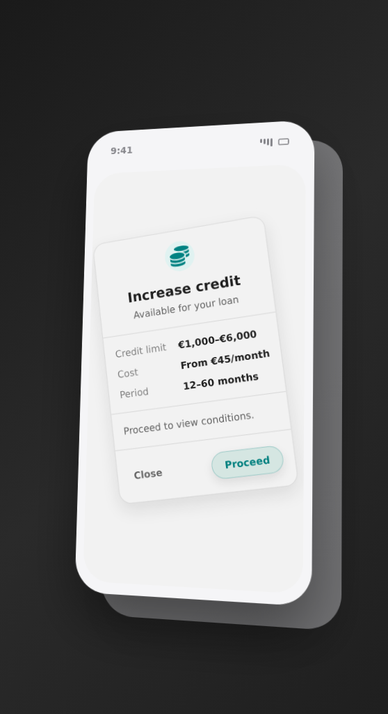
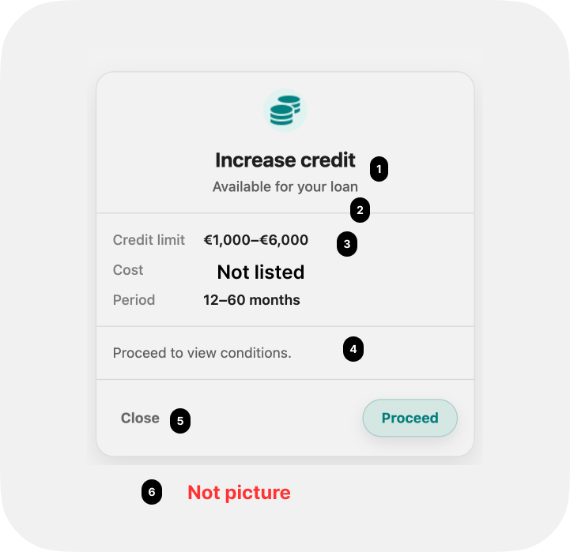
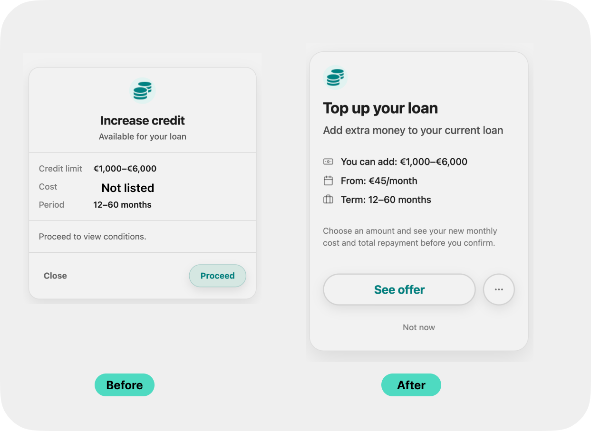
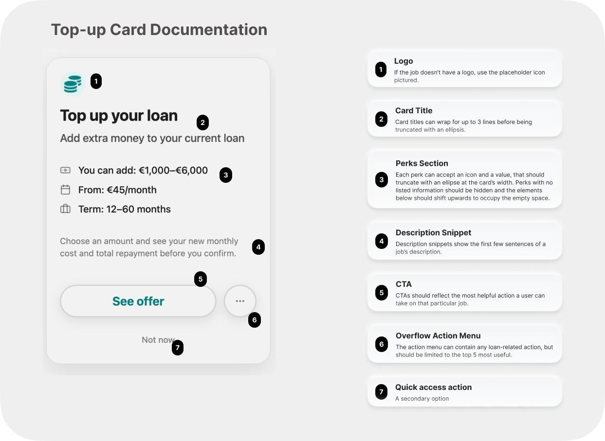
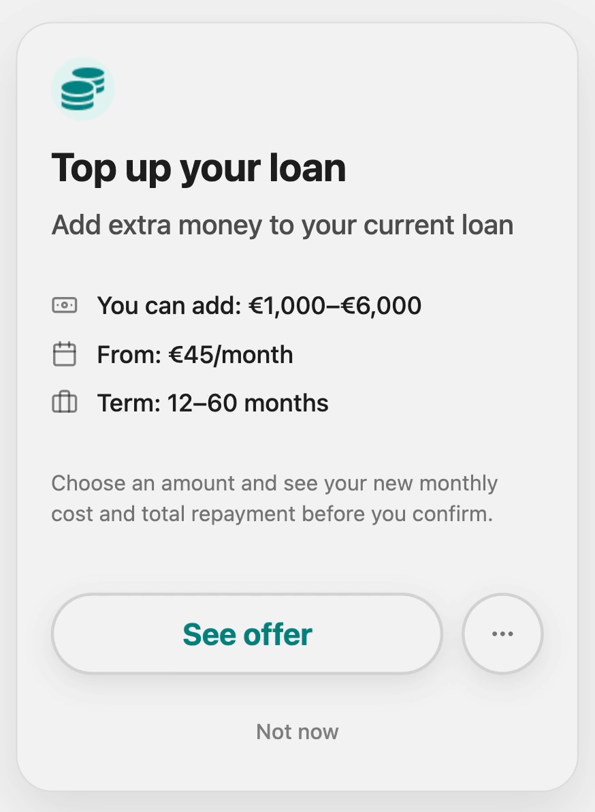
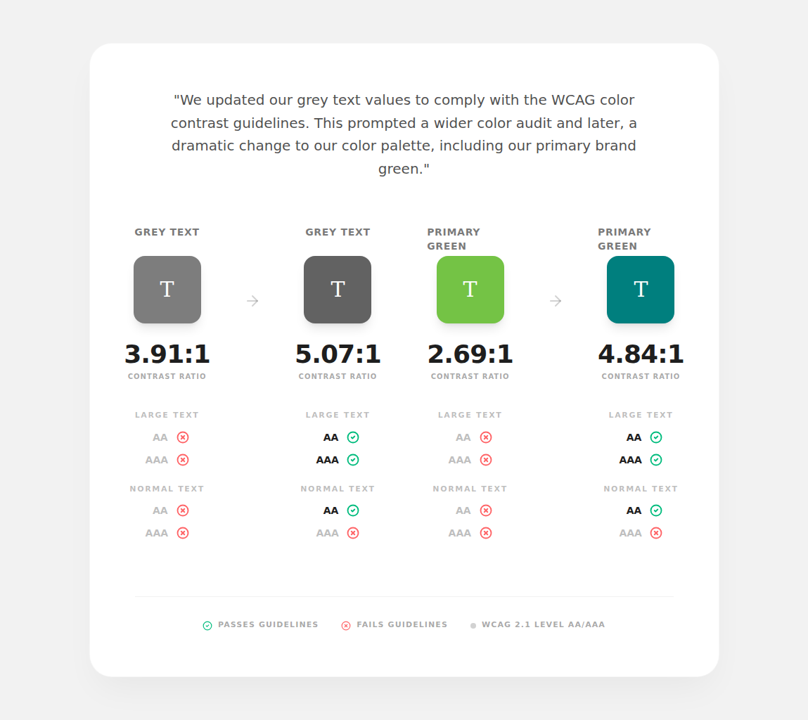

Content and interaction design
The top-up card.
Optimizing clarity of top-up options.
The UI issues were real, but the biggest damage came from copy, microcopy, and the lack of a design system.

Resurs Bank · top-up experienceA clearer offer at a glance.
The Top-up offer card is a key UI component in Resurs Bank’s retail finance experience. It appears in high-traffic surfaces where customers explore ways to increase an existing loan.
Functionally, the card had accumulated issues: it was hard to scan, inconsistent across placements, and expensive to iterate on — especially microcopy. I led the redesign to improve usability and turn the card into a reusable, testable component.
Small words created big friction.
User comprehension suffered: customers could not quickly understand what the offer meant, what happened next, or how committal the action was.
The card was rebuilt per placement, creating visual drift, uneven behaviours, and slow experimentation.
“Not listed” was a dead end. It did not explain whether information was unavailable, loading, or hidden until later.
Similar weights, weak contrast, heavy borders, and unclear secondary actions made scanning harder and reduced trust.

Make the card easier to scan — and easier to test.
I mapped the information people actually needed, then restructured the existing content into a clearer, more testable format without requiring a full rewrite.

Let information breathe.
The flexible layout allowed longer offer texts to wrap instead of truncating. Left-aligned elements supported faster scanning, while amount, monthly cost, and term received a clearer typographic hierarchy.
From one card to a reusable system.
Working with front-end exposed gaps in the outdated design-system process. Because teams moved quickly and tested constantly, winning variants were often shipped before they were documented or componentized.
I organized meetings with front-end and design stakeholders, helped componentize the winning variant, documented the new card system, and stress-tested it before wider testing.


One overflow menu, consistent everywhere.
Secondary actions varied by placement, creating uncertainty about what “dismiss” meant. Consolidating them into one overflow menu created consistent labels and room for future actions such as “Remind me later” or “Why am I seeing this?”
Clarity that performed.
